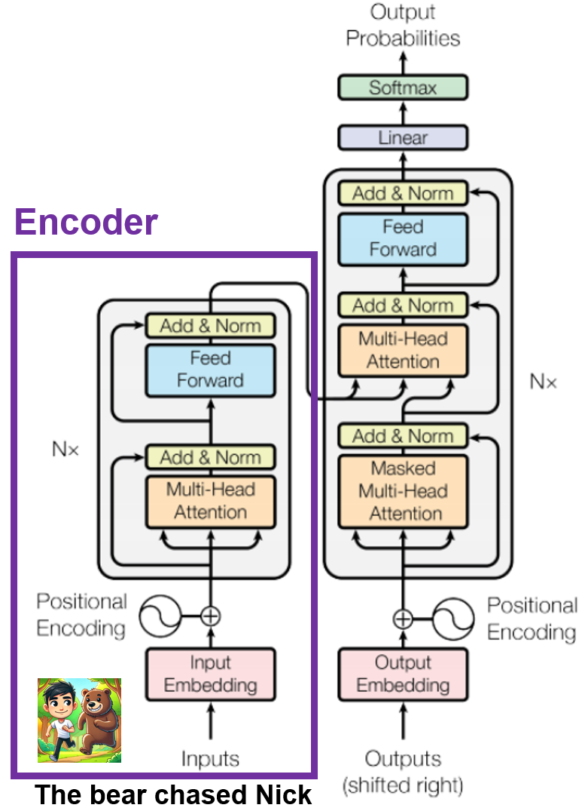
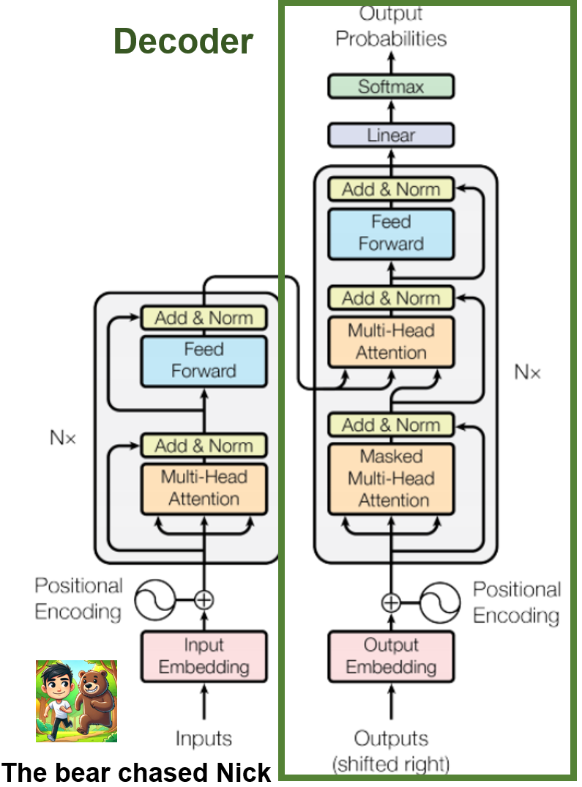
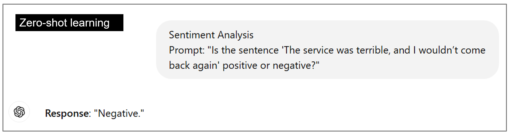
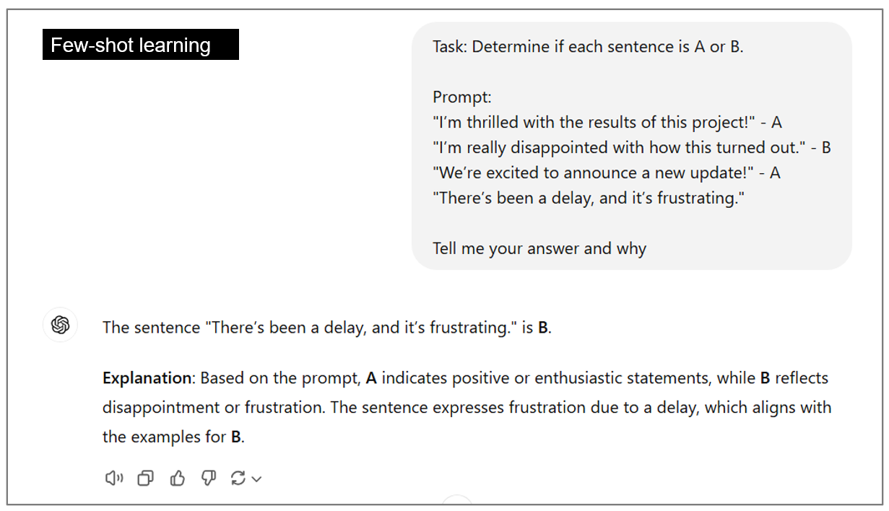

The encoder reads. The decoder generates.
The original Transformer has two main parts. We can understand their roles through a simple translation example.
Why introduce attention?
Understanding a word often depends on other words around it. Attention helps a Transformer connect information across a sentence, including words that are far apart.
For example, in “The bear chased Nick,” the action connects the bear and Nick. Attention provides a way for information at these positions to be combined.
Transformers can process multiple positions in parallel during training. When generating text, an autoregressive decoder still produces new pieces one at a time.
Build a representation of the input.
Follow the purple box in the figure from bottom to top. The encoder turns the input sentence into representations that include information about its context.
Explore the diagram: select a number to see a short explanation.

1 · Input embeddings
Start at the bottom of the purple box. The input text is represented as lists of numbers the network can process.
Input embeddings: represent the words with numbers.
The model converts pieces of text into lists of numbers it can process.
Positional encoding: keep track of order.
Position information helps distinguish “The bear chased Nick” from “Nick chased the bear.”
Multi-head attention: connect relevant information.
Several attention heads combine information from different positions in different ways. For our example, these connections can help represent the relationship between “bear,” “chased,” and “Nick.”
Feedforward layers: refine the representation.
A small neural network further processes the information at each position. The encoder repeats these stages to build richer representations.
Other labels in the picture: Add & Norm helps combine and stabilize the numerical information. N× means the block is repeated several times.
Encoder takeaway: It creates contextual representations of the input for the decoder to use.
Generate the output one piece at a time.
Follow the green box in the figure. The decoder uses information from the encoder and the output already available to generate what comes next.
Explore the diagram: select a number to see a short explanation.

1 · Output embeddings
The decoder starts with representations of the output pieces already available. It uses them to help predict what comes next.
Begin the output.
The decoder uses the encoded input to help predict the first piece. In our translation example, that might be “熊” (bear).
Masked self-attention: use what is available so far.
When predicting the next piece, the decoder can use the output prefix. The mask prevents it from looking ahead at future output.
Encoder–decoder attention: refer back to the input.
The decoder also draws on the encoder’s representations of the original sentence.
Feedforward layers: refine the prediction.
The decoder further processes the combined information before producing scores for possible next pieces.
Linear + softmax: assign scores and probabilities.
The model produces a probability distribution for what could come next. One piece is selected, and the process repeats.
Follow the translation
熊 → 熊追 → 熊追尼克
These are simplified display pieces. In a real model, text is split into units called tokens, which may be whole words, parts of words, or punctuation.
For an illustrative first prediction, the model might assign 熊 80%, 貓 10%, and 魚 10%. Choosing the highest-probability option would select 熊.
Decoder takeaway: It generates output using the input representations and the output prefix, then repeats the process.
Watch the encoder and decoder work together
Press Play to follow the process. Each step includes an explanation below the animation; pause whenever you want more time to read.
Simplified original encoder–decoder design. The displayed Chinese pieces illustrate generation, not a specific tokenizer.
From Transformers to generative AI.
Generative AI creates content such as text, images, audio, video, and code. Language generation often works by repeatedly predicting what comes next.
GPT and BERT use different parts.
The original Transformer has both an encoder and a decoder. Other models use one side of this design.
| Model family | Basic idea | Common uses |
|---|---|---|
| GPT | Uses a decoder-style architecture to generate subsequent text. GPT stands for Generative Pre-trained Transformer. | Writing, conversation, translation, summarization, and coding assistance |
| BERT | Uses an encoder-style architecture to represent a word in its surrounding context. | Classification, sentiment analysis, question answering, and information retrieval |
Why can answers differ?
A language model assigns probabilities to possible next pieces of text. Sampling can select different options. Settings such as temperature and differences in the prompt can also affect the output.
Lower temperature usually makes the distribution more concentrated. Higher temperature spreads it out. More variety does not automatically mean a better or more accurate answer.
Not every generative model uses a Transformer, and a fluent answer can still contain errors.
Training provides patterns. Prompts provide context.
These ideas help explain how a language model learns and how examples in a prompt can guide its response.
Pretraining: learn patterns from many examples.
A GPT-style model is commonly trained to predict the next token across large amounts of text. This training changes the model’s weights.
In-context learning: use instructions and examples.
A model can use instructions or examples in the current prompt to guide its response, without an ordinary model-weight update during that response. Zero-shot provides no examples; one-shot provides one; few-shot provides several.
Learning from human feedback: improve responses.
One influential approach first trains on example responses, then learns from human comparisons, and uses that feedback to guide further training. This can improve helpfulness, but it does not guarantee correctness.
See examples of zero-shot and few-shot prompts


Explore more
Use these optional resources to continue exploring at your own pace.